Análise de resíduos - uma ilustração.
Simulando dados para um GLM poisson.
Gráfico dos valores simulados e da função de regressão.
plot(jitter(y) ~ x, pch = 20, cex = 1.25, col = 'blue')
med_x <- function(x) exp(1.5- 2*x + 0.4*x^2)
curve(med_x, from = 0, to = 5, col = 'red', add = TRUE, lwd = 2)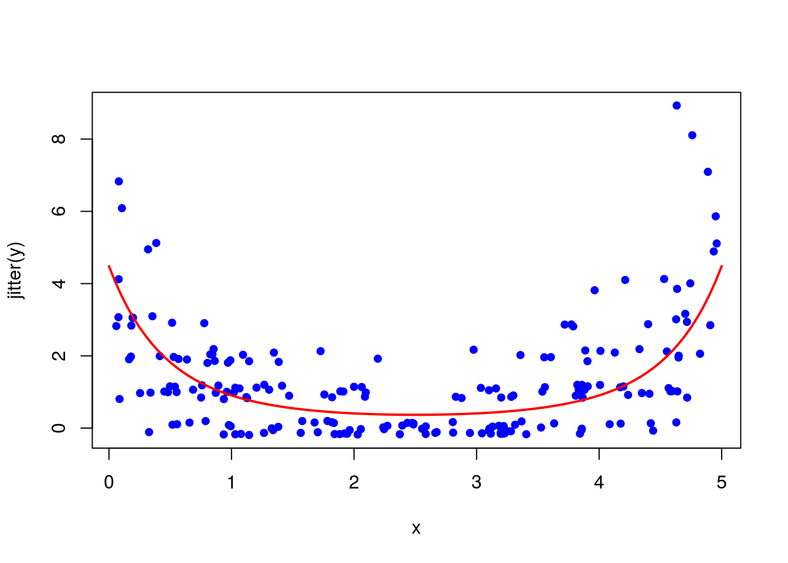
Primeiro, vamos ajustar um modelo com resposta normal.
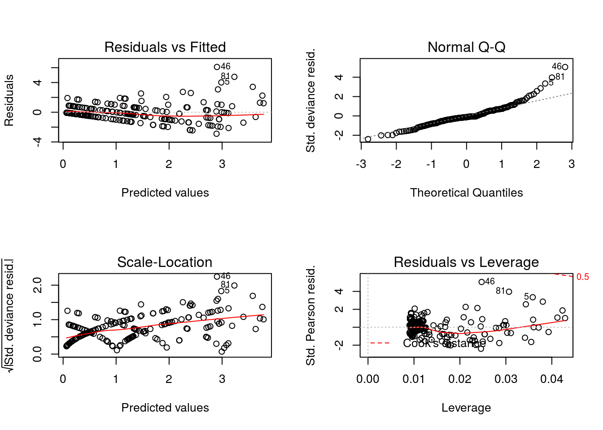
Os dois gráficos à esquerda evidenciam que os resíduos não têm variância constante. Além disso, o qqplot aponta distribuição fortemente assimétrica, bem diferente da normal. Vamos proceder com o gráfico meio normal com envelope simulado, para uma melhor apreciação dos resultados.
## Gaussian model (glm object)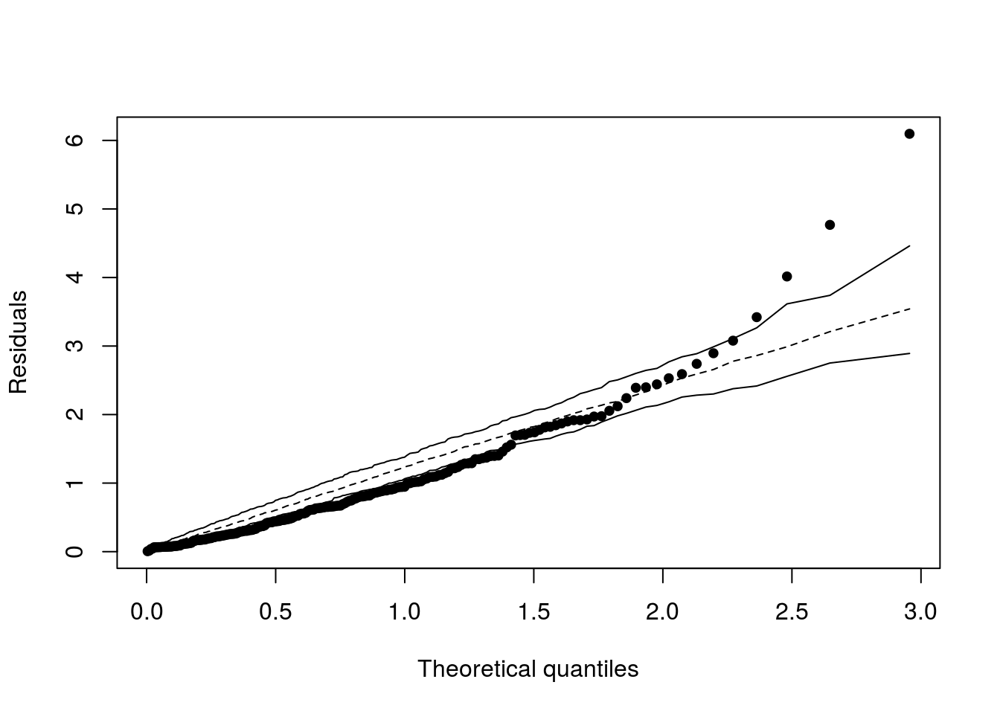
O comportamento dos resíduos, oscilando, em boa parte, fora do envelope simulado, evidencia que o modelo não está bem ajustado. Na sequência, vamos extrair e produzir gráficos para os resíduos quantílicos aleatorizados.
residuos <- qresid(ajuste1)
ajustados <- predict(ajuste1)
par(mfrow = c(1,2))
plot(residuos ~ ajustados, pch = 20, cex = 1.4, col = 'blue')
# Gráfico de resíduos versus valores ajustados
qqnorm(residuos, pch = 20, cex = 1.4, col = 'blue')
qqline(residuos)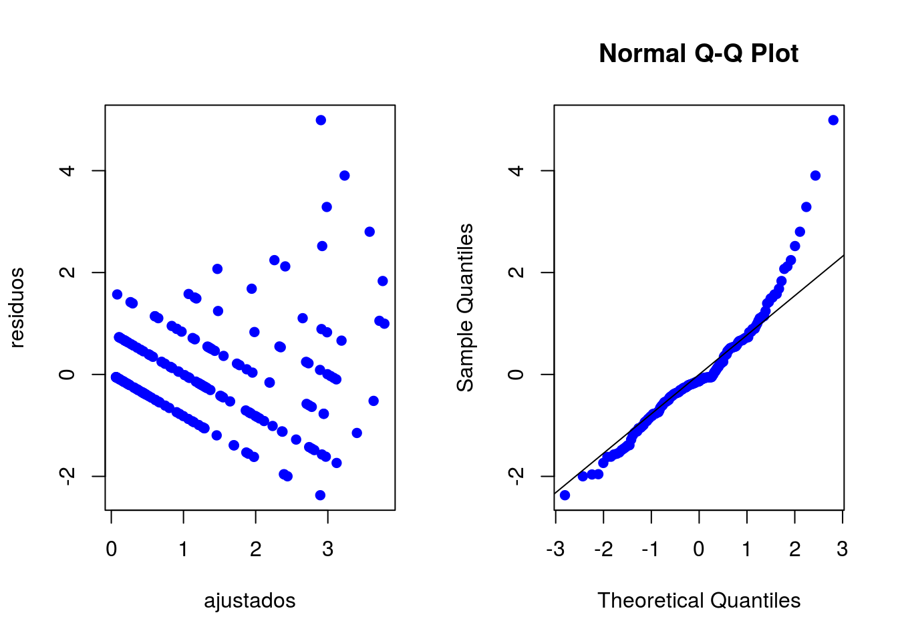
Gráfico quantil-quantil normal. Novamente observamos o padrão de variância não constante e não normalidade, indicando o mau ajuste do modelo.
Agora, vamos considerar distribuição Poisson para a resposta, mas com especificações incorretas para o preditor.
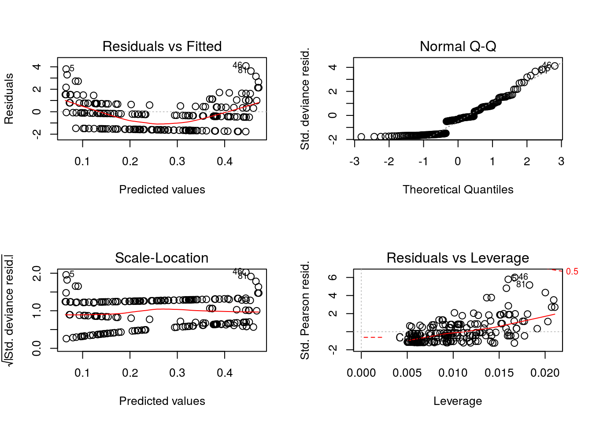
## Poisson model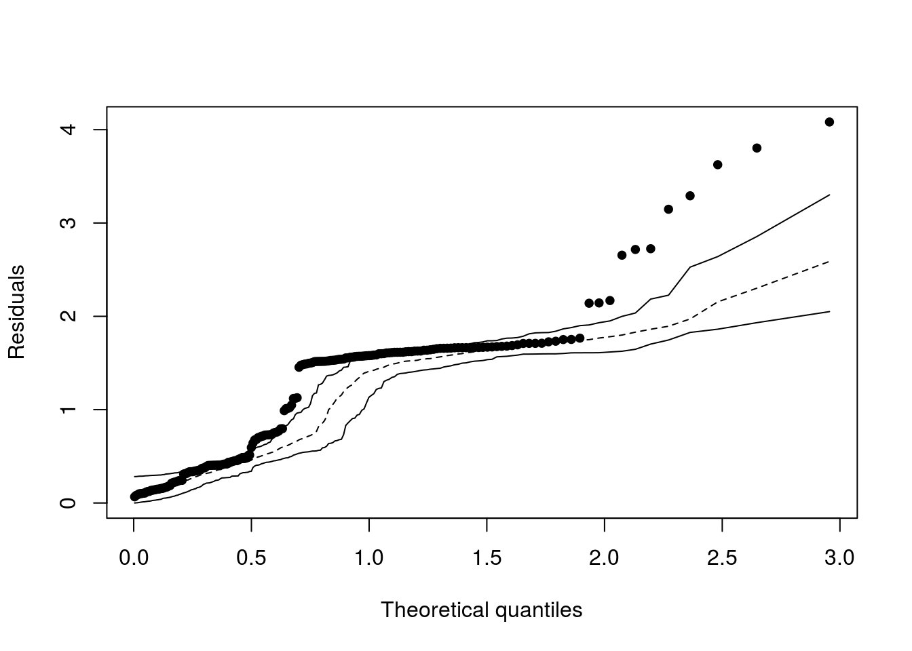
Modelo apenas com termo linear, desconsiderando o termo quadrático de x.
O gráfico de resíduos versus valores ajustados (canto superior à esquerda), indica a necessidade de se incluir o efeito quadrático da covariável.
O modelo claramente não está bem ajustado, uma vez diversos resíduos se encontram acima da parte superior do envelope simulado. Vamos ver o comportamento dos resíduos quantílicos aleatorizados:
residuos <- qresid(ajuste2)
ajustados <- predict(ajuste2)
par(mfrow = c(1,2))
plot(residuos ~ ajustados, pch = 20, cex = 1.4, col = 'blue')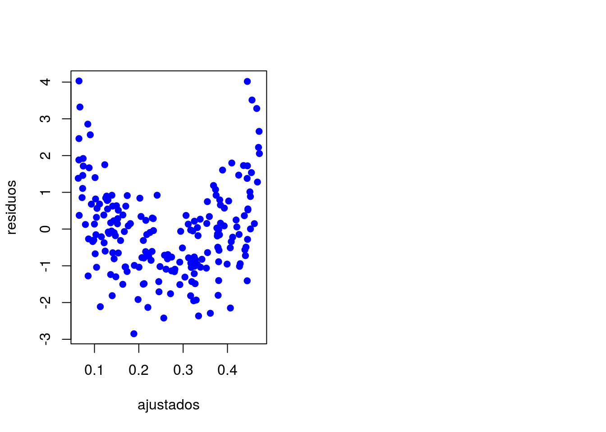
Gráfico de resíduos versus valores ajustados.
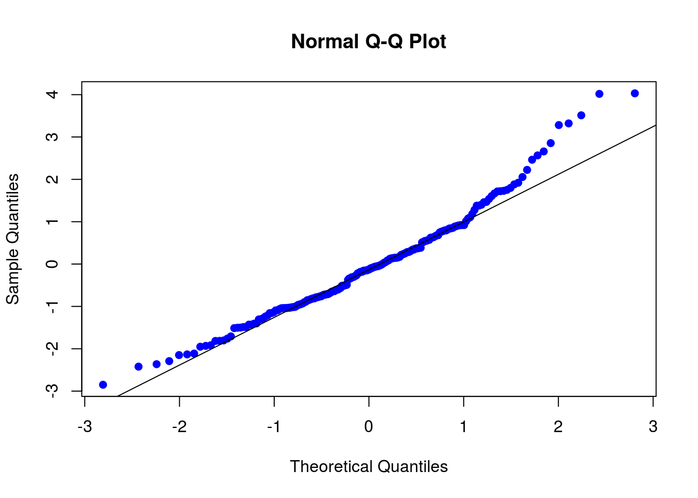
Gráfico quantil-quantil normal. Novamente observamos a falta de ajuste do modelo, indicando a necessidade de se incluir o esfeito quadrático.
Finalmente, o modelo de Poisson com efeito quadrático de x.
Modelo apenas com termo linear, desconsiderando o termo quadrático de x.
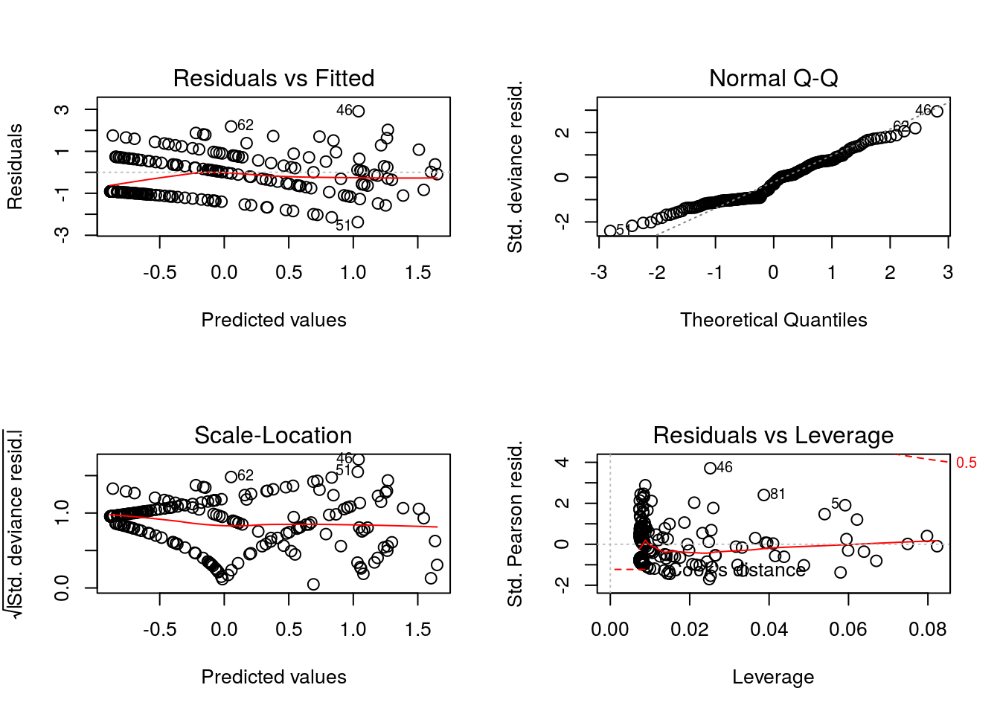
Os resíduos apresentam variância constante, conforme o gráfico do canto inferior à direita, e não apresenta qualquer padrão sistemático no gráfico do canto superior à direita O gráfico quantil-quantil pode ser melhor avaliado usando os envelopes simulados.
## Poisson model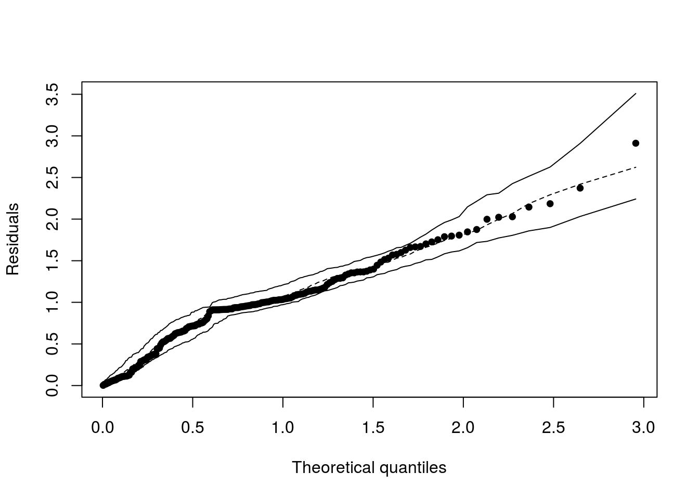
Os resíduos estão dispersos, praticamente em sua totalidade, no interior do envelope, que é o comportamento esperado para um bom ajuste. Para os resíduos quantílicos aleatorizados, temos:
residuos <- qresid(ajuste3)
ajustados <- predict(ajuste3)
par(mfrow = c(1,2))
plot(residuos ~ ajustados, pch = 20, cex = 1.4, col = 'blue')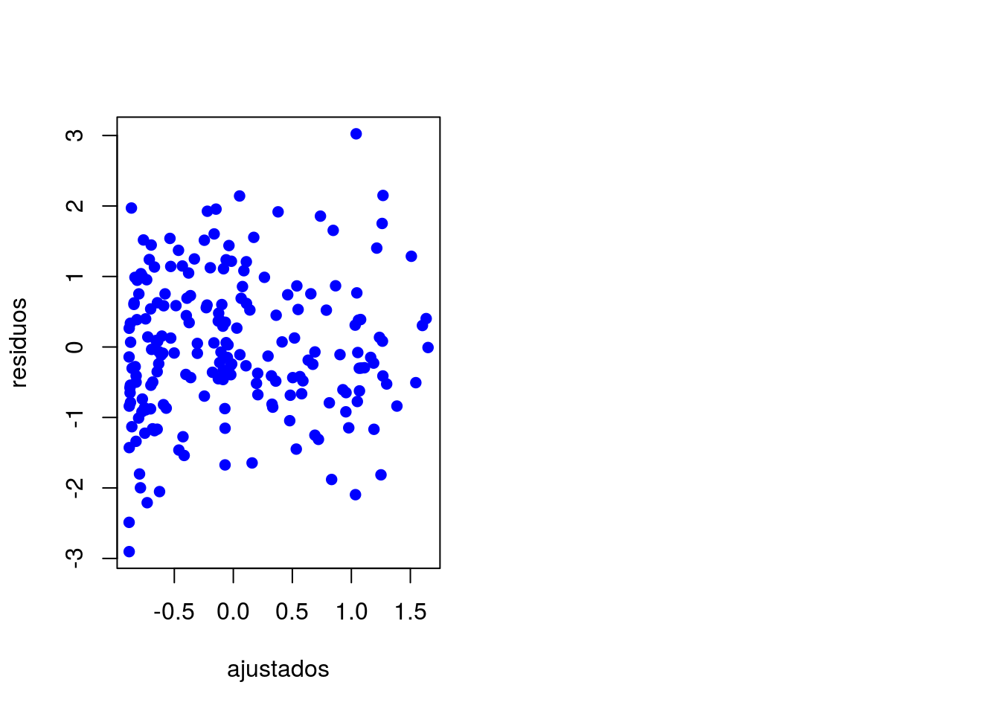
Gráfico de resíduos versus valores ajustados.
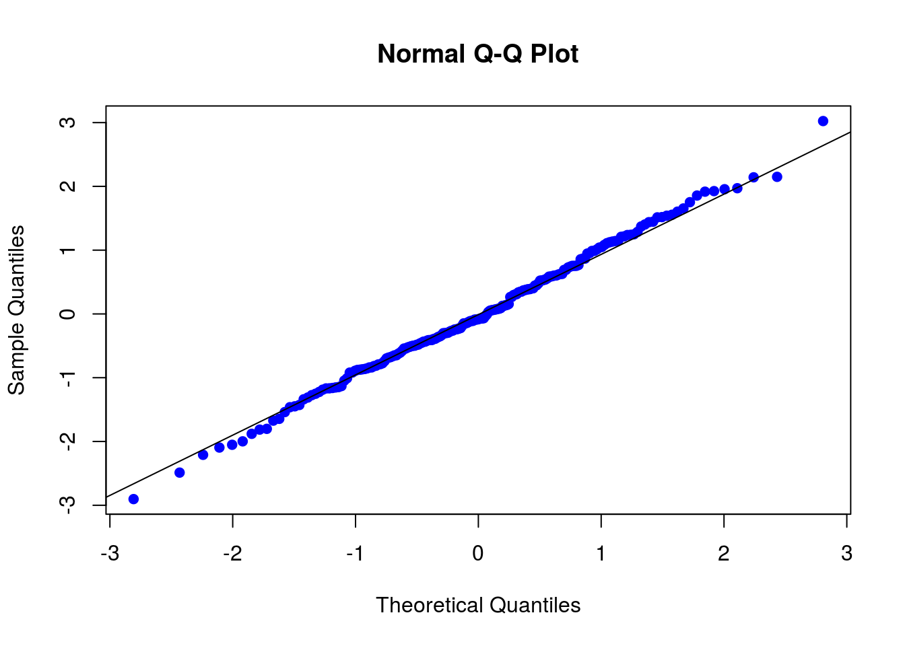
Simulação - distribuição dos resíduos componentes da deviance.
Vamos considerar um glm com resposta binomial, ligação logito. Seguem os dados.
x <- c(5.4, 5.5, 6.2, 4.5, 6.5, 6.8, 5.2, 4.9, 5.9, 4.6,
6.2, 3.3, 6.4, 5.3, 5.1, 5.6, 3.8, 5.3, 5.1, 5.8,
4.5, 4.2, 5.8, 3.6, 4.2, 6.0, 7.1, 4.9, 4.8, 4.0,
6.3, 6.9, 5.6, 6.0, 4.1, 3.9, 6.2, 3.5, 5.1, 2.5,
5.2, 5.3, 3.1, 3.6, 5.8, 5.4, 5.1, 3.8, 6.1, 4.9)
y <- c(1, 1, 0, 0, 0, 0, 0, 0, 1, 0,
0, 0, 1, 0, 0, 0, 0, 0, 0, 0,
0, 0, 0, 0, 1, 1, 1, 0, 0, 0,
1, 1, 0, 1, 0, 0, 0, 0, 0, 0,
0, 1, 0, 1, 0, 1, 0, 0, 1, 0)
plot(x, jitter(y, amount = 0.05), pch = 20, xlab = 'x', ylab = 'y', cex = 1.25)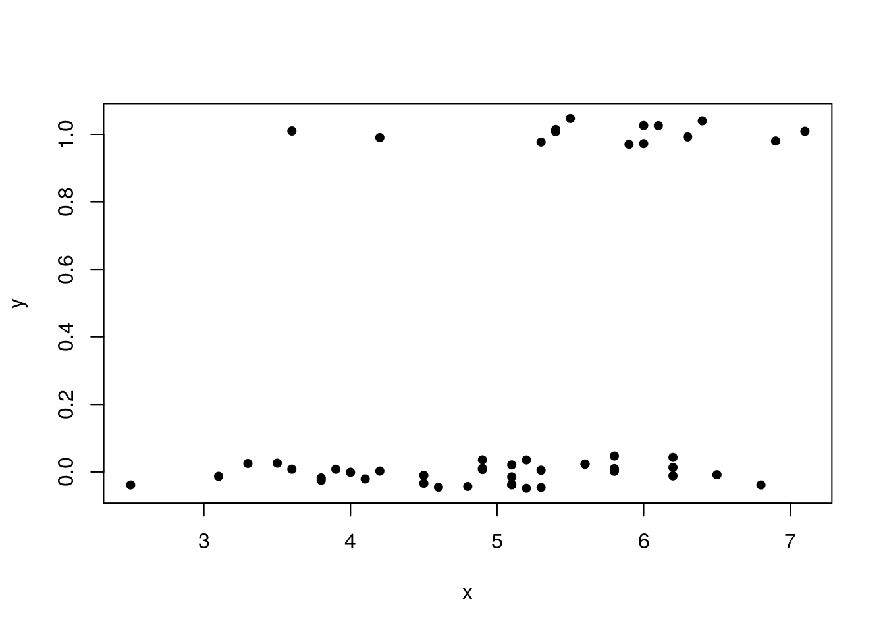
ajuste <- glm(y ~x, family = binomial)
qqnorm(resid(ajuste), pch = 20, cex = 1.5)
qqline(resid(ajuste))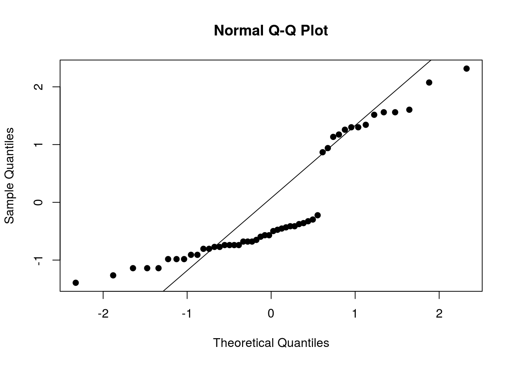
A distribuição dos resíduos claramente não tem boa aderência à distribuição normal. Mas será que isso implica que o modelo não se ajusta bem aos dados?
Para investigar a adequação do ajuste, com base nesse gráfico de resíduos, vamos analisar a distribuição dos resíduos, nesta aplicação, no cenário em que o modelo está corretamente especificado. Como? Usando simulação, oras!
## [1] 0 0 0 0 0 1 0 1 0 0 0 0 0 1 0 0 0 0 0 0 0 0 1 0 0 0 1 1 0 0 1 1 0 0 1
## [36] 0 0 0 0 0 0 1 0 0 1 0 0 0 1 0O vetor novoy armazena um vetor de respostas simulado a partir do modelo. O método de simulação é idêntico ao que usamos anteriormente, para analisar a distribuição da deviance, usando a função predict. Vamos substituir o vetor resposta original por este simulado e analisar os resíduos.
ajustesim <- glm(novoy ~x, family = binomial)
qqnorm(resid(ajustesim), pch = 20, col = 'grey70', cex = 1, ylim = c(-3,3))
qqline(resid(ajustesim))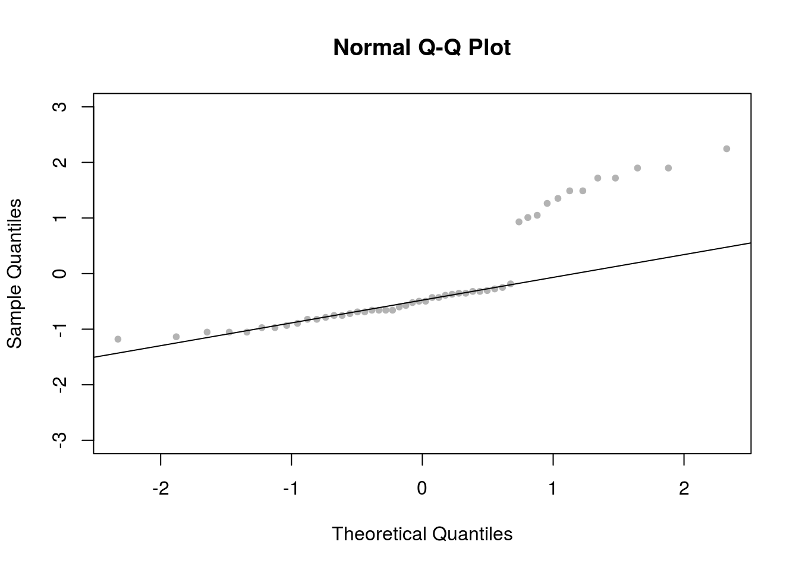
Os resíduos, novamente, não apresentam distribuição normal. Só que neste caso não temos dúvidas que o modelo tenha sido corretamente especificado, uma vez que os dados foram simulados a partir do modelo. Agora, vamos repetir a simulação um grande número de vezes (no caso 100) e plotar, num único gráfico, os resíduos produzidos por cada ajuste.
# for(i in 1:100){
# novoy <- simulate(ajuste)$sim_1
# ajustesim <- glm(novoy ~x, family = binomial)
# q1 <- qqnorm(resid(ajustesim), pch = 20, col = 'red', plot.it = FALSE, cex = 0.05)
# points(q1$x, q1$y, col = 'grey70')
# }
# qorig <- qqnorm(resid(ajuste), pch = 20, cex = 1.5, plot.it = FALSE)
# points(qorig$x, qorig$y, pch = 20, cex = 1.5)Sobre esta base de resíduos simulados, vamos plotar os resíduos originais, produzidos pelos modelo ajustado que está sob investigação.
# qorig <- qqnorm(resid(ajuste), pch = 20, cex = 1.5, plot.it = FALSE)
# points(qorig$x, qorig$y, pch = 20, cex = 1.5)Observe que os resíduos produzidos pelo modelo são absolutamente compatíveis com os resíduos simulados. Assim, temos forte evidência de que o modelo está corretamente especificado, se ajustando bem aos dados.
Ilustração - resíduo quantílico aleatorizado.
Vamos simular dados de um GLM com resposta Gamma e função de ligação logarítmica. Vamos usar a implementação da distribuição Gamma disponível no pacote gamlss (bater ?GA, no pacote gamlss).
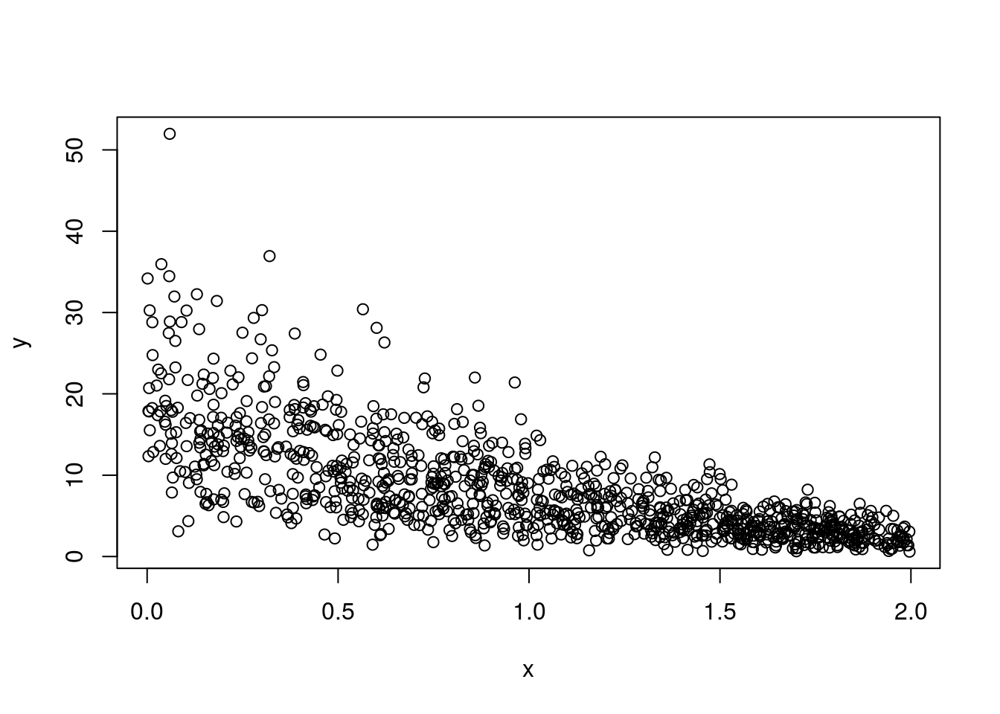
Passo 1: Vamos avaliar a função distribuição acumulada da Gamma em cada par y_i, mu_i.
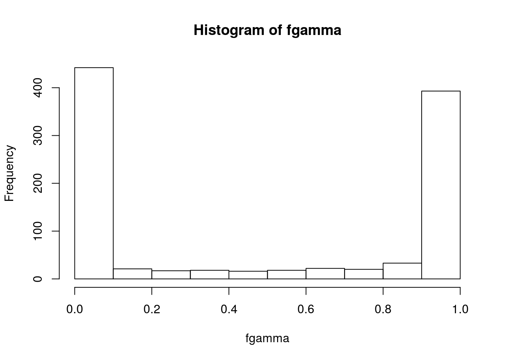
Como era de se esperar, a variável resultante tem distribuição uniforme.
Agora, aplicamos a inversa da fda Normal (função quantil) aos valores de fgamma.
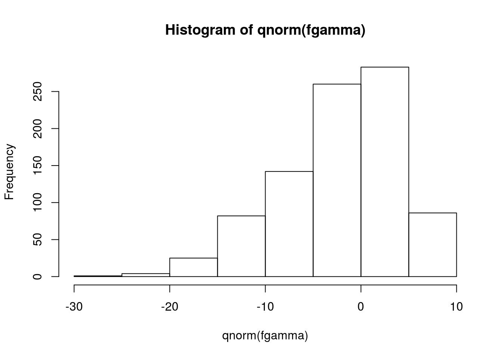
Resíduos com distribuição normal.